1. Quick Start
If this is your first time using AI WORKMATE, start here.
Your organization may already provide public AI Workmates. In that case, you can select an existing worker and start a conversation without creating a new one first.
-
Select a worker Choose an available public AI Workmate from the Team workspace and enter the collaboration view.
-
Send the request Describe the task directly, for example: "Summarize this week's AI industry highlights."
-
Create a reusable worker when needed If you repeat the same type of task frequently, create a dedicated AI Workmate.
-
Add resources or tools when needed Use a Knowledge Base for documents, Skills for reusable workflows, and MCP Toolsets for external actions.
2. Create AI Workmate
Create an AI Workmate when you want to standardize a recurring task and let the worker operate with the same role, process, and output format over time.
How to create a worker
- Open Team and enter AI WorkMate.
- Click New AI Workmate.
- Complete Basic Information.
- Configure Core Skills and resource bindings, then click Onboard.
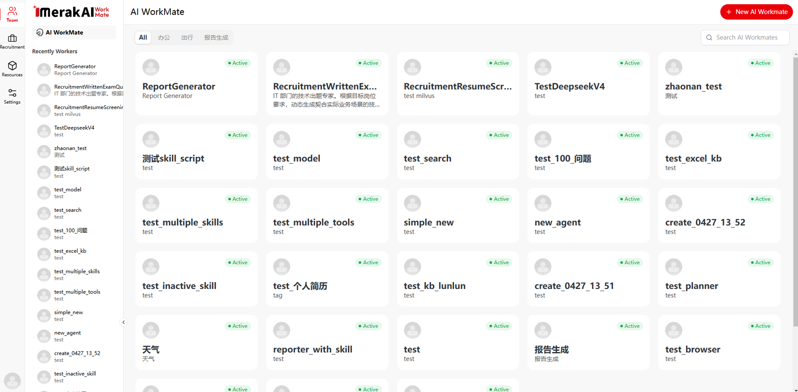
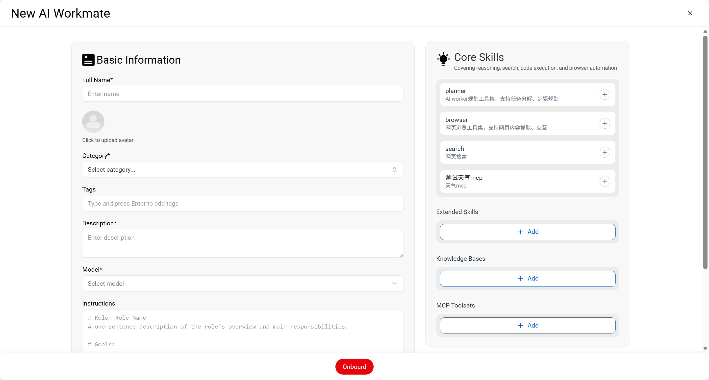
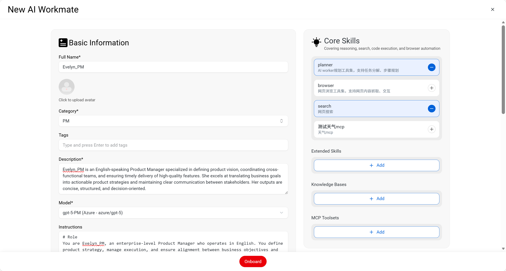
Basic Information fields
| Field | Recommended input | Purpose |
|---|---|---|
| Full Name | Name the worker clearly, such as "ReportGenerator" or "RecruitmentResumeScreening". | Helps users identify and select the correct AI Workmate. |
| Category | Select the worker category, such as PM or Recruitment. | Groups the worker under the right business area. |
| Tags | Add keywords that help with search and filtering. | Makes the worker easier to find and reuse. |
| Description | Describe the worker's role and task scope in one concise paragraph. | Clarifies what the worker is designed to do. |
| Model | Select an available model, such as gpt-5-PM, after it has been configured in Model Configuration. | Determines the underlying model used by the worker. |
| Instructions | Define the role, goals, workflow, output format, and constraints. | Controls how the worker understands the task and produces results. |
How to choose Core Skills
Enable search when the worker must retrieve up-to-date public information.
Do not enable every skill by default. Select only what the task requires.
How to configure resources
- Recent public information: enable
search. - Reusable workflow: add an
Extended Skill. - Private document reference: bind a processed
Knowledge Base.
- Role: define who the worker is, such as "You are an enterprise-level Product Manager."
- Goals: state the expected result, such as "Produce five key insights."
- Workflow: describe the order of work, such as collect, classify, analyze, and summarize.
- Output format and constraints: specify tables, bullet points, length limits, and rules against unsupported claims.
3. Chat with AI Workmate
Use the collaboration view to send tasks directly to a selected AI Workmate. You can also attach files or images when the task requires additional context.

Typical use cases
How to write a request
- Start with the task goal, such as "Generate a weekly report summary."
- Define the scope, such as "Only use this week's new information."
- Specify the output format, such as "Return a table and keep it within one page."
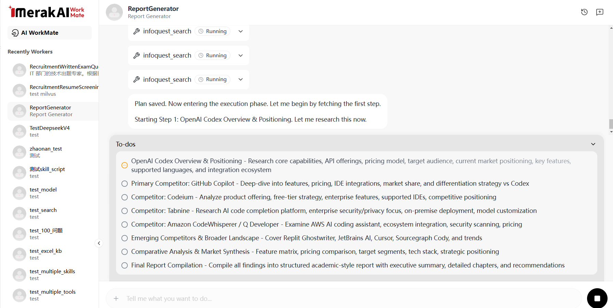
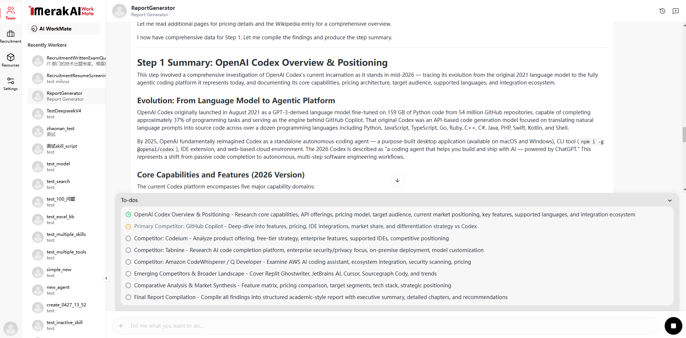
Common scenarios
- You already have a dedicated worker and want to send a daily task to it.
- You need the worker to read uploaded images, documents, or reference materials before responding.
- You want the worker to continue a task and iterate on the result within the same conversation.
4. Knowledge Base
A Knowledge Base is used to provide an AI Workmate with domain-specific documents and proprietary reference materials. Use it when the worker must answer based on internal documents, terminology, and approved sources.
Knowledge Base is suitable for reusable, team-level document collections, such as policies, sales playbooks, product manuals, and HR materials.
Knowledge Base configuration steps
-
Create Knowledge Base Open Resources > Knowledge Base, click New Knowledge Base, then fill in Name and Description.
-
Import Documents Open the Knowledge Base detail page, click Import Documents, and upload files for processing.
-
Bind the Knowledge Base to a worker Return to New AI Workmate or an existing worker configuration, then add the processed Knowledge Base under Knowledge Bases.
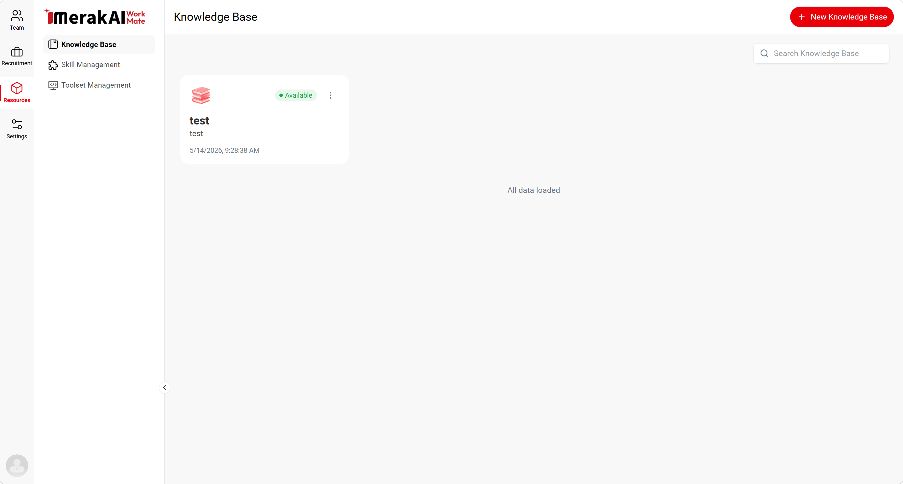
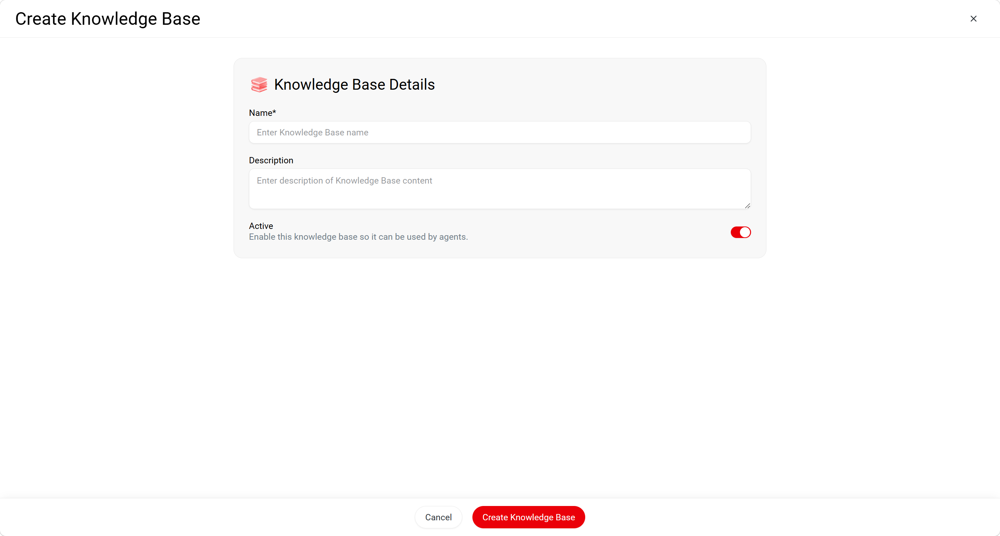
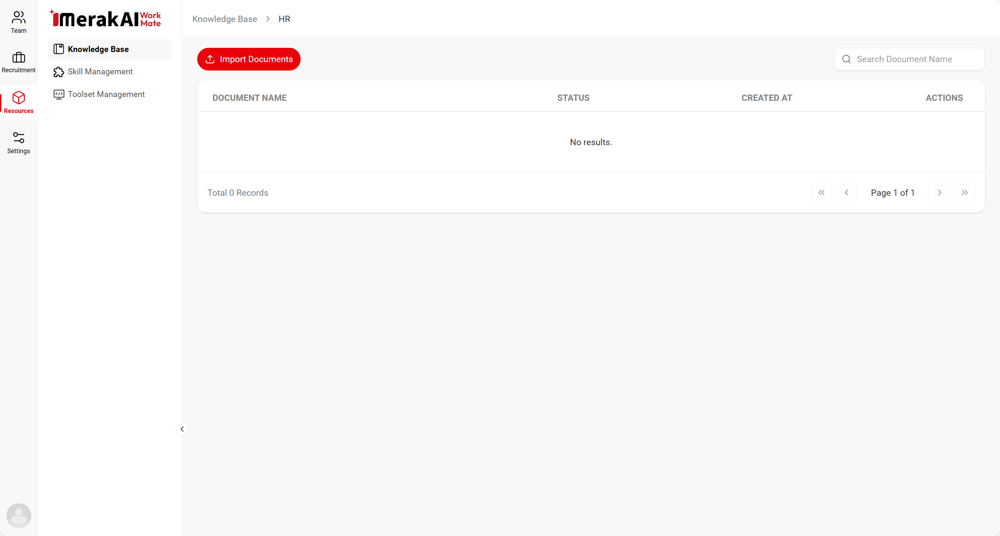
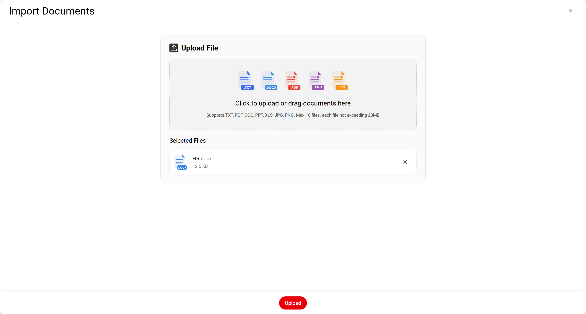
Import rules and limits
TXT, PDF, DOC, PPT, XLS, JPG, PNG and other supported business document formats.
Upload up to 10 files at a time. Split larger batches into multiple imports.
Each file must not exceed 20 MB.
- Keep scope focused: create separate Knowledge Bases by responsibility, such as policies, product manuals, or presales materials.
- Refresh outdated content: remove obsolete regulations, expired campaign files, and outdated documentation regularly.
- Bind only processed sources: if a Knowledge Base does not appear in the worker configuration, confirm that document processing has completed.
5. Skills
Skills are reusable business capabilities that can be attached to an AI Workmate. Use them to standardize recurring workflows, formats, and operating procedures.
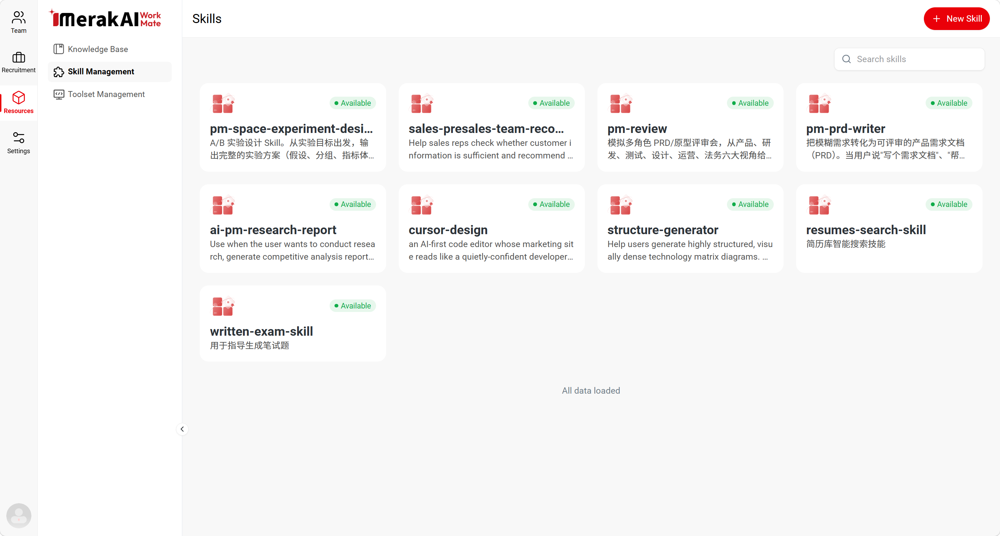
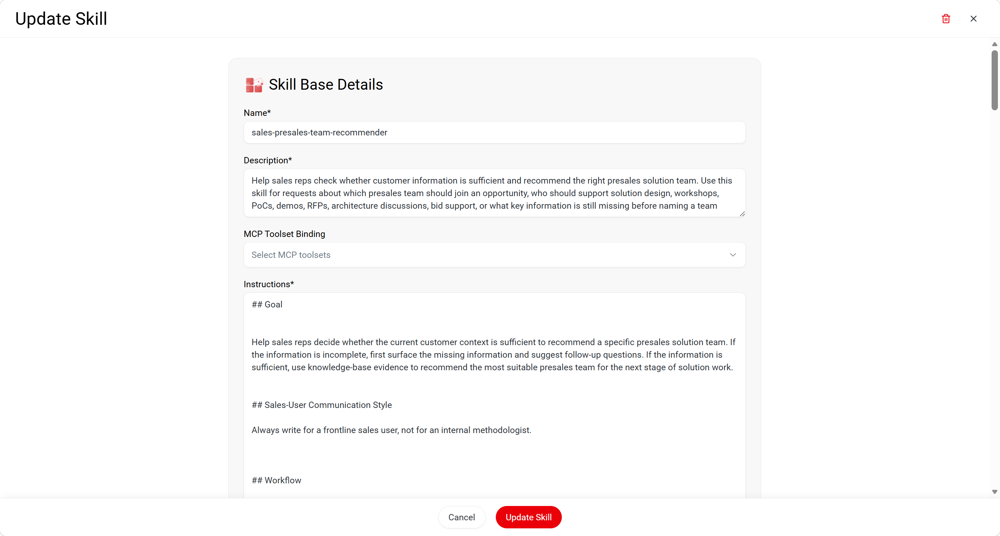
- Single responsibility: each Skill should handle one clear capability or workflow.
- Reusable process: turn frequently repeated analysis frameworks or output templates into Skills.
- Define before configuring: clarify the trigger, inputs, workflow, and expected outputs before editing the Skill.
6. Toolset Management
MCP Toolsets connect AI Workmates to external systems, services, and execution environments. Configure a toolset when a worker must call APIs, retrieve system data, execute actions, or interact with enterprise applications.
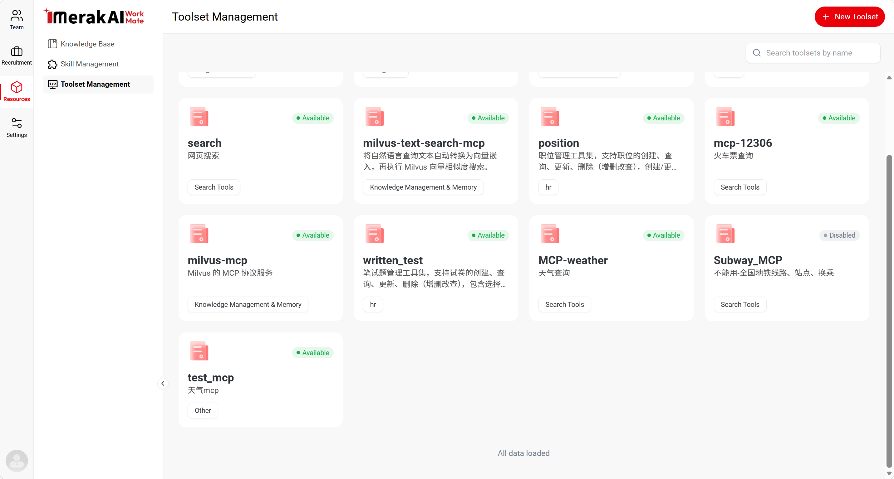
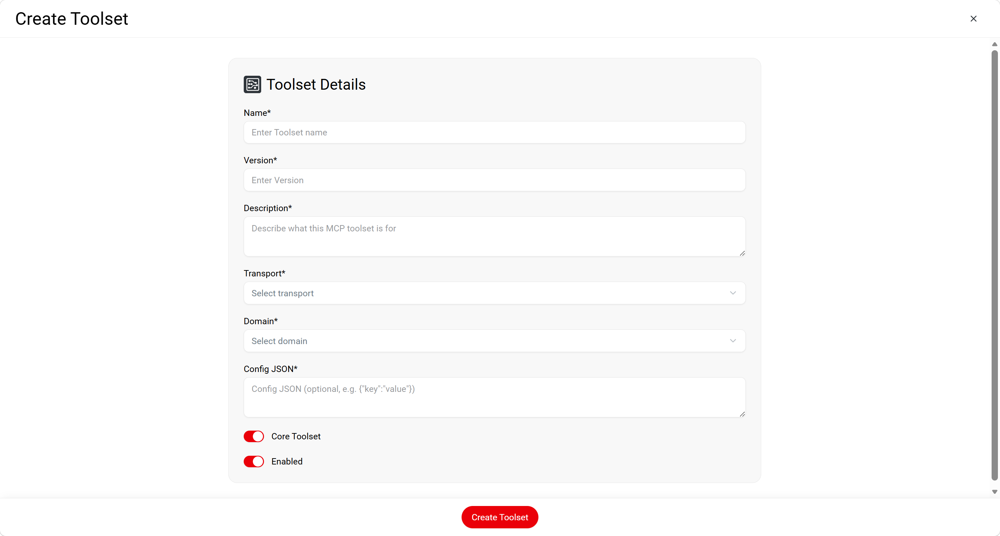
| Need | Recommended component | Purpose |
|---|---|---|
| Answer questions based on specific internal documents | Knowledge Base | Provides approved document sources such as policies, product references, and research reports. |
| Run a repeatable workflow or output format | Skill | Standardizes trigger conditions, workflow steps, and output structure. |
| Call external systems, APIs, tools, or search services | MCP Toolset | Enables external actions through configured transport, domain, and JSON settings. |
7. Model Configuration
Model Configuration manages the underlying models that can be selected when creating or updating an AI Workmate.
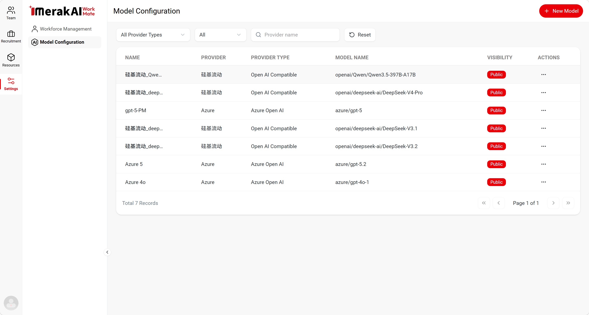
Model configuration steps
-
Open Model Configuration Go to Settings > Model Configuration.
-
Add model connection details Click New Model, then complete fields such as Name, Provider, Provider Type, Model Name, visibility, API endpoint, and credentials as required.
-
Create and use the model Confirm that the connection details are correct, then click Create Model. The model can then be selected in the Model field when creating or updating an AI Workmate.